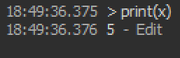
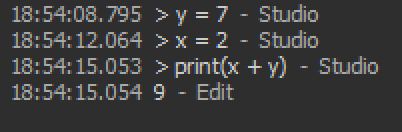

Numbers can be divided into two types: integers and floats. Integers are basically the "whole numbers" that you've learned in elementary school: -2, -1, 0, 1, 2, 56, 79, and so on. A float is essentially a decimal number: 5.0, 6.79, 4.20, and so on. Floats themselves are much more complicated than that, so watch this video if you want to learn more about them.
A character is a single letter, like 'A', 'B', 'c', 'd', '$', '?', and anything else you can type. A string is a bunch of characters strung together, hence the name "string." In other words, strings are entire words or sentences, or any other collection of characters. Some examples of strings are: "Hello, World!", "jhfsdjkf9832", and "Bruh."
Booleans might sound weird if you've never heard them before, but they're basically just true or false (note: they are NOT the literal strings "true" and "false"). For example, the statement "1 + 1 = 2" is a true statement, but "1 + 2 = 6" is false. These are Booleans (fun fact: they are named after George Boole.)
Tables are essentially collections of different kinds of data, sort of like a list. We will get into more detail about this later.
Simply put, these are things that have been created by ROBLOX themselves, such as Instance and Vector3. These will be postponed until much later.
The nil type represents nothingness. We will take a deeper look at this later.
We just went through a bunch of data types, but how would we actually represent and store them in Luau? The answer is variables.
You might have heard about variables in your elementary school math classes: if 4x + 3 = 13, then find the value of x. Variables in programming are somewhat
similar; they have a name, and they represent a certain value.
The basic format for declaring a variable in the command line is: name = value. Let's try out an example in the ROBLOX Studio command line:
Here, we've created a variable named x, and assigned it the value of 5 (an integer!).
Note that there are a few constraints on what you can name a variable; you can only use letters, underscores, and numbers, but it must not start with a number.
Once you have a variable, you can now reference it using its name:
Since we stored the integer 5 in our variable named x, doing print(x) basically does the same thing as print(5).
We can also do math using variables:
In the code above, we defined y to be 7, and x to be 2. So doing y + x is the same thing as doing 7 + 2, which is 9.
true, 1, "false", "one", 5 + 7, (5 + 7) / 89, '5'x = "Hello" and y = "Bye". Let z = x..y (concatenation can be used with variables!). What is the type of z?x = 5, and y = 9. Let z = x + y. Consider the statement "z is equal to 15." Is this true or false?b = "true". Consider the following statement: "The variable b is a boolean." What Boolean value does this statement have?x = 5, and y = x. Then change x to be 8. What happens if you print out y?typeof function to get the type of a variable. Let myVar = "5".
Then type print(typeof(myVar)) in the command line. What gets printed out? Use this to check your answers to the previous problems.